SonarQube
El pilar de la calidad y seguridad del código
¿Por qué SonarQube?
Menos Deuda Técnica
Detecta bugs y malas prácticas rápido.
Seguridad Total
Identifica vulnerabilidades críticas de forma temprana.
Aceleración (ROI)
Retorno de Inversión: Menos incidencias en producción = Clientes felices.
El Flujo de Calidad
Análisis automatizado, continuo y preventivo.
Desarrollo
Código Nuevo
SonarQube
Quality Gate
Producción
Código Seguro
Radiografía del Proyecto
La salud general del código (Dashboard Principal).

Vulnerabilidades de Seguridad
Riesgos críticos identificados que podrían ser explotados.
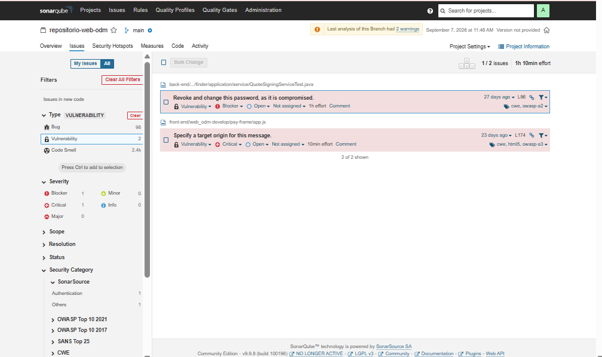
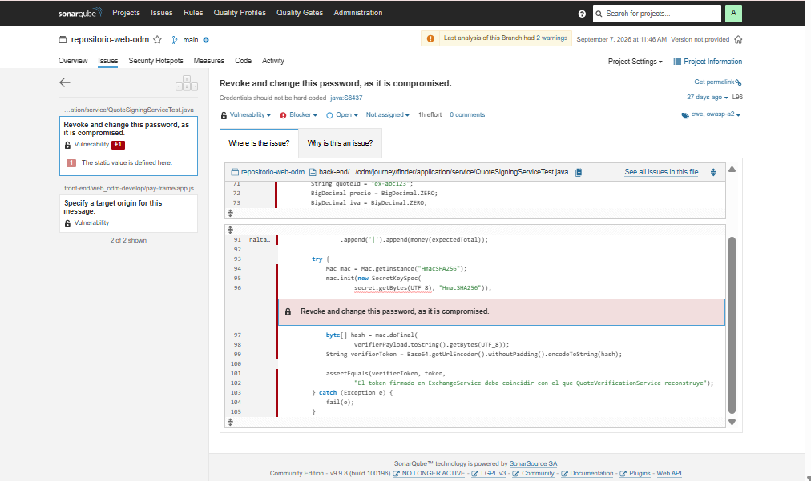
Puntos de Acceso Seguros (Hotspots)
Fragmentos de código sensibles (requieren revisión).

Deuda Técnica (Code Smells)
Impacta en la mantenibilidad del sistema.

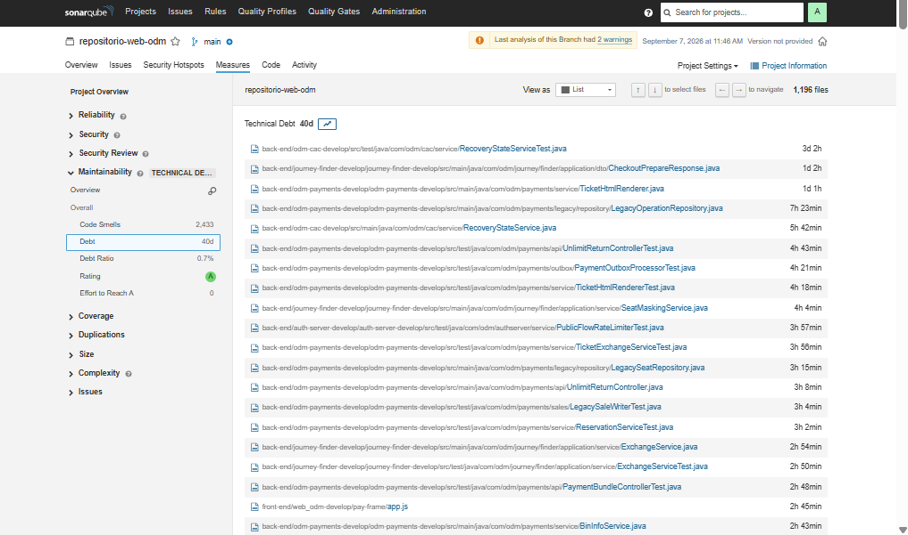
Corrección de Bugs
Prevención de fallos en ejecución.
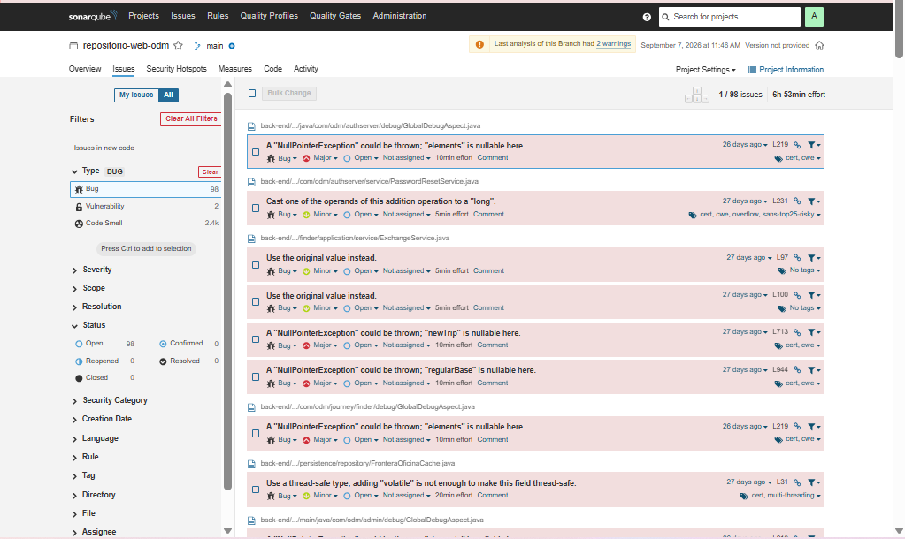
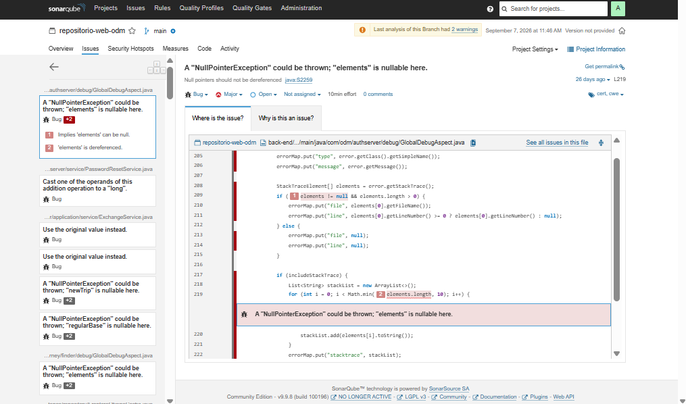
Código Duplicado
Evita sobrecostos de mantenimiento.

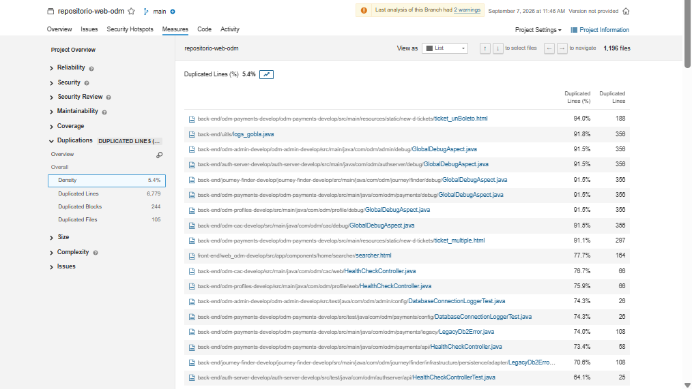
Integración Continua (CI/CD)
El análisis ocurre automáticamente en GitHub Actions.
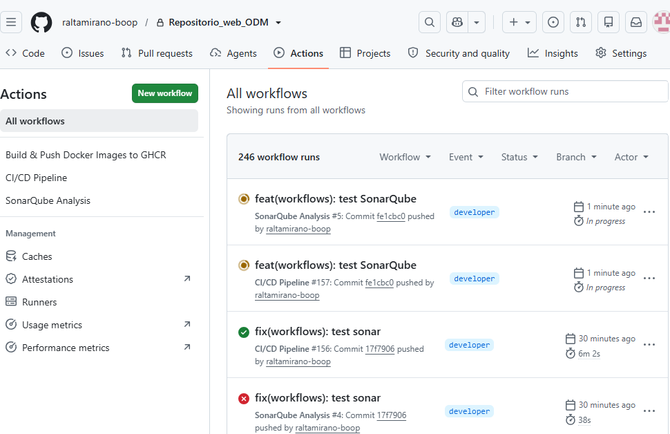
Gestión Segura
Las credenciales no se exponen (GitHub Secrets).
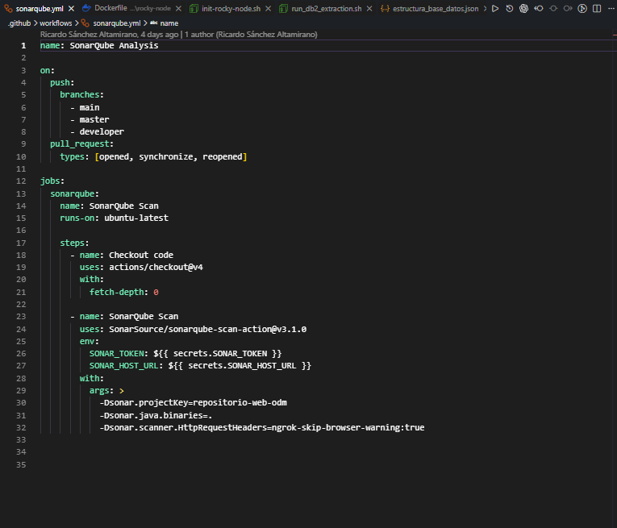
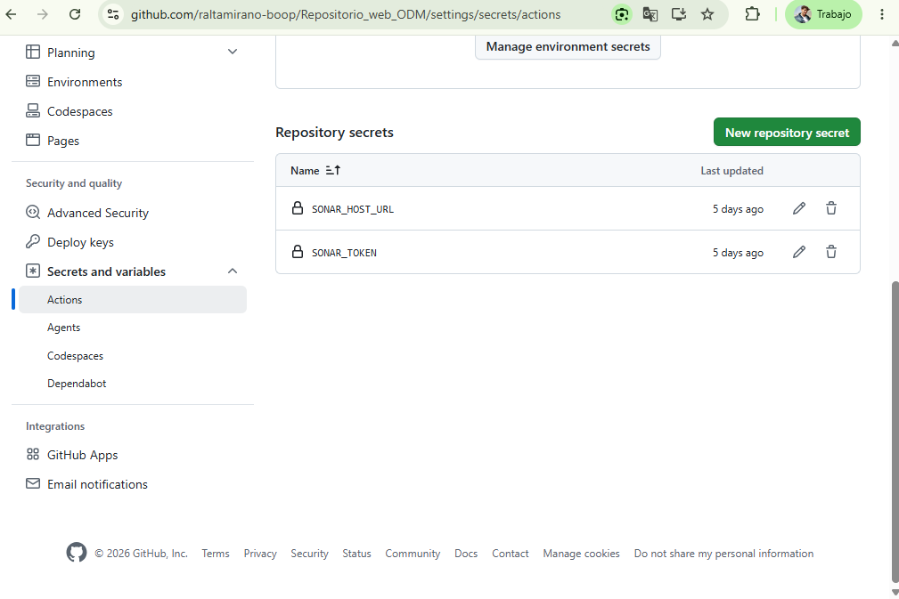
Control de Proyectos
Administración centralizada desde SonarQube.
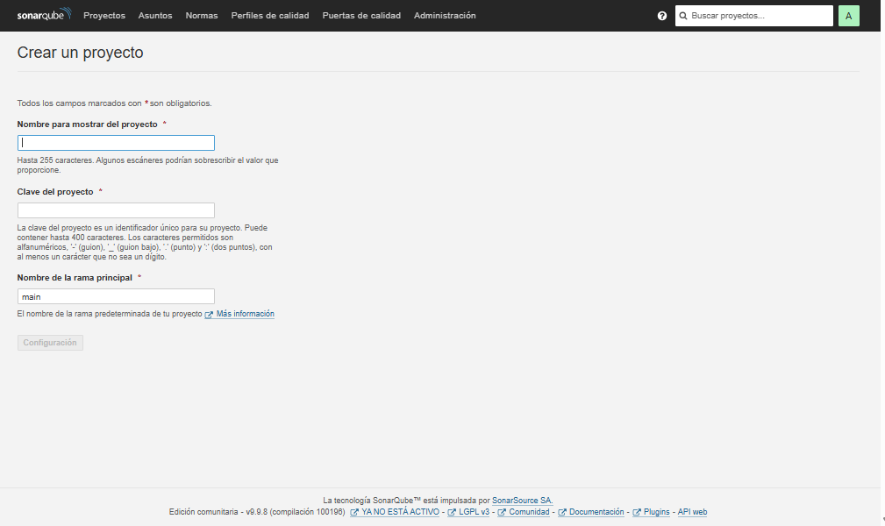
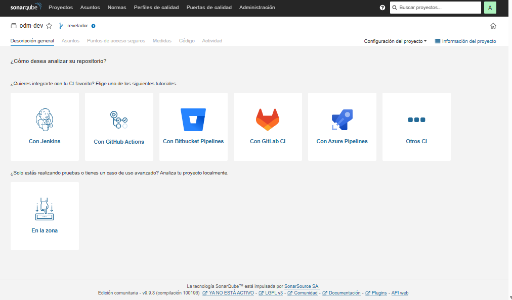
Autenticación Segura
Generación de tokens encriptados.
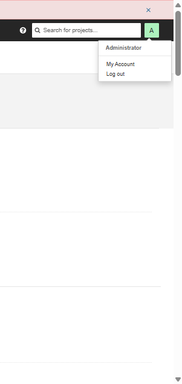
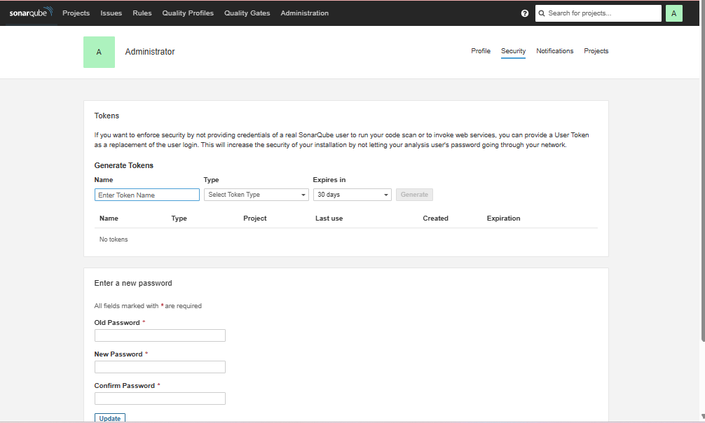
Infraestructura Flexible
Exposición local o nube empresarial.
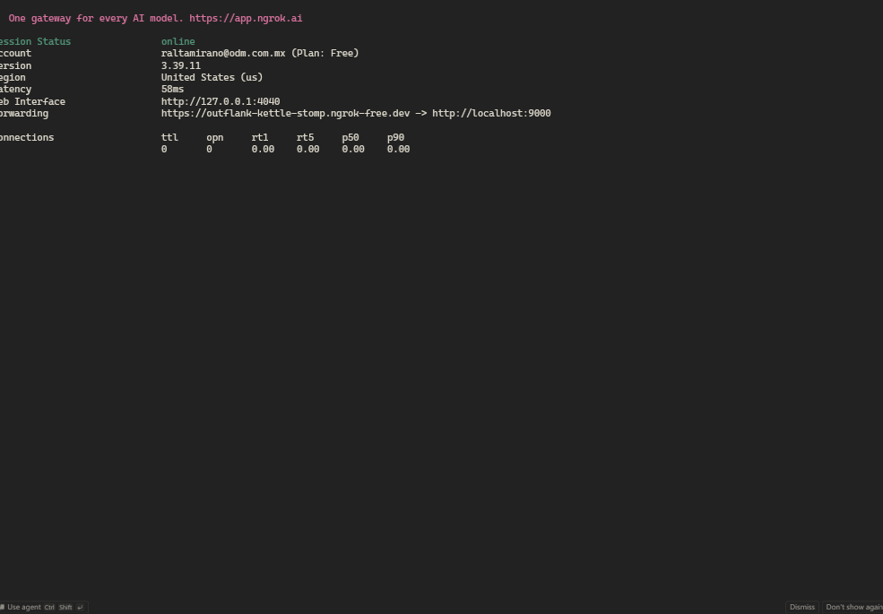
Conclusión
SonarQube es una decisión estratégica.
- Protegemos la marca asegurando la calidad.
- Identificamos riesgos antes de llegar al cliente.
- Optimizamos el ROI (Retorno de Inversión) del equipo.